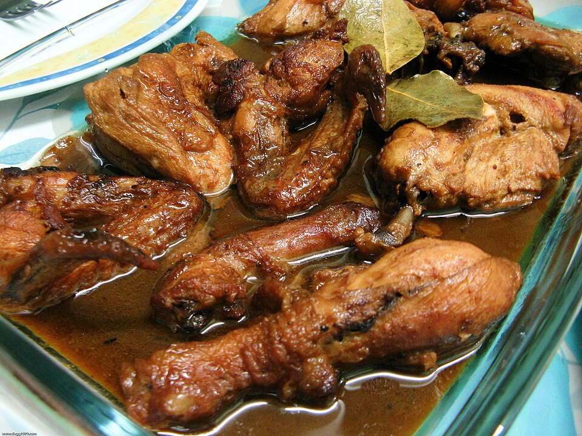

Chicken Adobo
Back to Homepage

Description
Chicken adobo is one of the most popular dishes in the Philippines. Chicken is simmered in vinegar, soy sauce, garlic, and bay leaves until tender and full of flavor. It's often called the unofficial national dish, and every family has its own version.
Ingredients
- 1 kg chicken, cut into serving pieces
- 1/2 cup soy sauce
- 1/2 cup white vinegar
- 1 head garlic, crushed
- 3 bay leaves
- 1 teaspoon whole black peppercorns
- 1 cup water
- 1 tablespoon cooking oil
Steps
- Combine the chicken, soy sauce, and garlic in a bowl. Marinate for at least 30 minutes.
- Heat the oil in a pot and brown the chicken pieces on all sides.
- Add the marinade, vinegar, water, bay leaves, and peppercorns.
- Bring to a boil without stirring, then lower the heat and simmer for 30 to 40 minutes.
- Simmer uncovered until the sauce thickens.
- Serve hot with steamed rice.